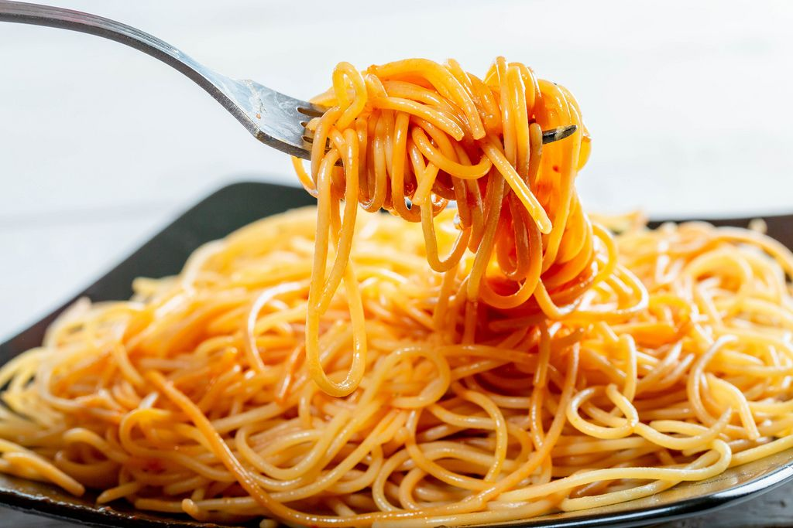

Classic Spaghetti

Classic Spaghetti
Mama mia!
Ingredients
- Spaghetti
- Passata (or canned tomatoes)
- Celery
- Carrots
- Onions
Steps
- Chop up celery, carrots, and onion to make soffrito
- Heat olive oil in pan and add soffrito. Cook about 10 mins, or until clear.
- Add passata or cannned tomatoes.
- Add pinch of salt, adjust to taste.
- Cook on super low heat for as long as you can, at least an hour.
- Boil up water, add spaghetti and cook according to package.
- Right before it's done, take a cupful of the boiling spaghetti water.
- Drain spaghetti when done, add back to pan.
- Toss with sauce and splash of spaghetti water.
Home